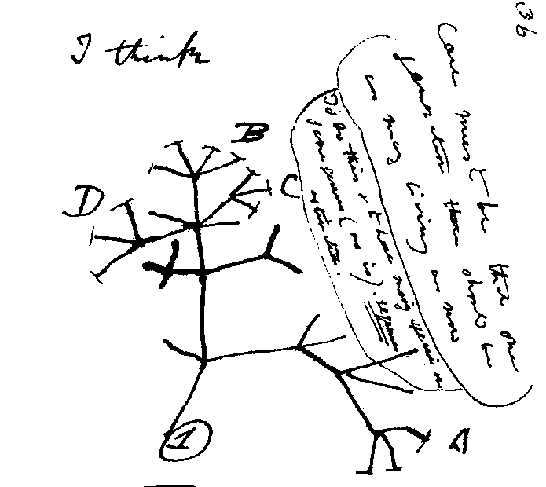

- einen einfachen Stammbaum lesen,
- erklären, was ein gemeinsamer Vorfahr ist,
- die Aussage „Der Mensch stammt vom Affen ab“ korrigieren.
Wenn Arten sich verändern und dabei aufspalten, dann müssen heutige Arten miteinander verwandt sein – wie Mitglieder einer großen Familie. Diese Idee heißt gemeinsame Abstammung.
1. Der Stammbaum des Lebens
Darwins Origin of Species enthält genau eine Abbildung: ein Diagramm, das sich wie ein Baum verzweigt. Es zeigt, wie aus einer Ausgangsart über lange Zeit mehrere neue Arten entstehen.
Die Idee hatte Darwin schon gut 20 Jahre früher: 1837 skizzierte er in seinem Notizbuch seinen ersten Stammbaum – und schrieb darüber vorsichtig „I think“ („Ich glaube“).

Darwins erste Stammbaum-Skizze, Notizbuch B, S. 36 (1837). Quelle: Wikimedia Commons, gemeinfrei.
So liest du einen Stammbaum:
- Die Zeit läuft von unten (früher) nach oben (heute).
- Die Enden der Äste oben sind heute lebende Arten.
- An jeder Verzweigung steht ein gemeinsamer Vorfahr – eine Art, die es heute nicht mehr gibt.
- Je jünger (höher) die Verzweigung ist, an der sich zwei Linien treffen, desto näher sind sie verwandt.
1 · Den Stammbaum lesen
6 minBeantworte mithilfe des Stammbaums:
- Welche Art hat sich als erste von den anderen abgezweigt?
- Sind Gorilla und Schimpanse oder Schimpanse und Mensch näher verwandt? Woran erkennst du das?
- Lebt der jüngste gemeinsame Vorfahr von Mensch und Schimpanse heute noch?
Lösung
- Der Orang-Utan – seine Linie trennt sich an der untersten (ältesten) Verzweigung.
- Schimpanse und Mensch. Ihre Linien treffen sich an einer jüngeren (höheren) Verzweigung als die von Gorilla und Schimpanse.
- Nein. Gemeinsame Vorfahren sind ausgestorbene Arten. Aus ihnen sind die heutigen Linien entstanden.
2. „Der Mensch stammt vom Affen ab“?
Der Satz ist so ungenau. Der Mensch stammt nicht vom Schimpansen oder Gorilla ab. Heutige Menschenaffen haben sich genauso lange weiterentwickelt wie wir. Mensch und Schimpanse haben aber gemeinsame Vorfahren, die vor etwa 8 bis 6 Millionen Jahren lebten. Danach trennten sich die Linien.
„Wenn der Mensch vom Affen abstammt, warum gibt es dann noch Affen?“ – Die Frage beruht auf dem Missverständnis. Vergleich: Du und deine Cousine habt gemeinsame Großeltern. Du stammst aber nicht von deiner Cousine ab – und es gibt euch beide.
2 · Richtigstellen
5 minEin Mitschüler sagt: „Der Mensch ist ein weiterentwickelter Schimpanse.“ Formuliere eine freundliche, fachlich korrekte Richtigstellung in zwei bis drei Sätzen.
- Ich habe den Begriff „gemeinsamer Vorfahr“ benutzt.
- Ich habe erklärt, dass sich auch der Schimpanse weiterentwickelt hat.
Lösung
Fast – aber nicht ganz. Der Mensch stammt nicht vom Schimpansen ab. Beide haben gemeinsame Vorfahren, die vor etwa 8 bis 6 Millionen Jahren lebten. Seitdem haben sich beide Linien getrennt weiterentwickelt – der Schimpanse ist also genauso „modern“ wie wir.
Was zeigt eine Verzweigung in einem Stammbaum?
- Eine Art hat sich zu einer anderen, heute lebenden Art weiterentwickelt.
- Aus einem gemeinsamen Vorfahren sind zwei getrennte Linien entstanden.
- Zwei Arten haben sich gekreuzt.
Welche Aussage ist richtig?
- Der Mensch stammt vom Schimpansen ab.
- Mensch und Schimpanse haben gemeinsame Vorfahren, die vor etwa 8 bis 6 Millionen Jahren lebten.
- Schimpansen werden sich irgendwann zu Menschen weiterentwickeln.
Im Stammbaum unten: Wer ist mit dem Menschen am nächsten verwandt?
- Gorilla
- Orang-Utan
- Schimpanse